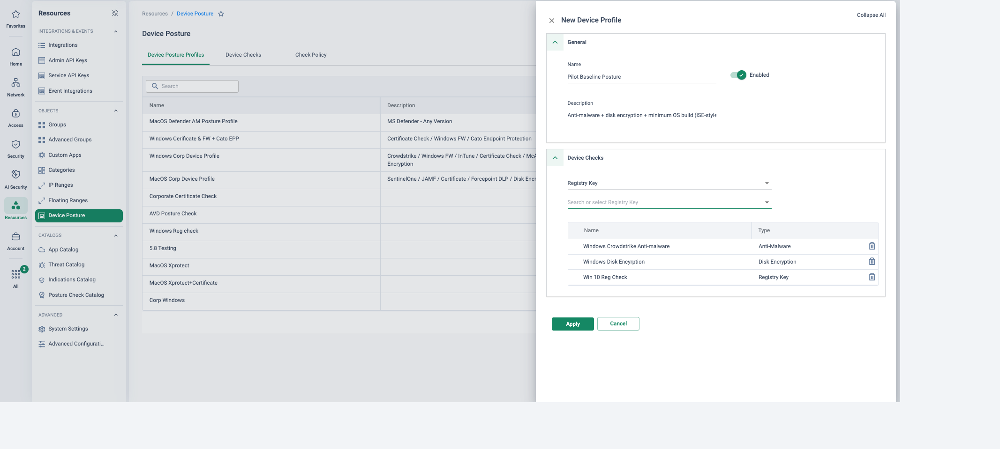
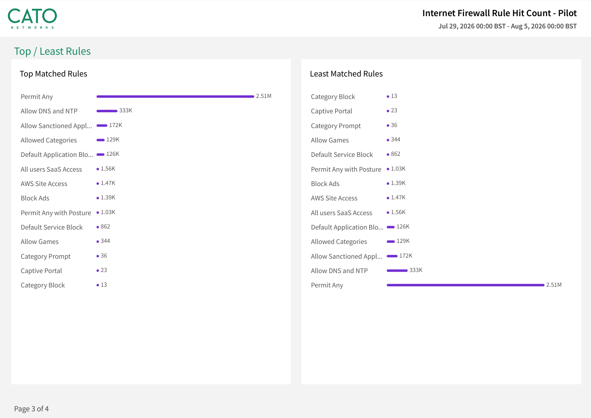

Why this matters
Cyber Essentials is the NCSC-backed certification the UK government calls the minimum standard of cyber security for organisations of all sizes, delivered through IASME, the NCSC's Cyber Essentials delivery partner. It is also a procurement gate: Procurement Policy Note 014 requires in-scope central government bodies to ask suppliers for Cyber Essentials (or Plus) on contracts that involve handling certain personal data — and a growing number of public bodies, frameworks and insurers ask for it well beyond that.
The NCSC Cyber Assessment Framework (CAF) works from the other direction: it is how operators of essential services and public bodies themselves are assessed. It is used by nearly all UK cyber regulators, underpins GovAssure — the assurance scheme for the critical systems of government organisations — and, since September 2024, the CAF-aligned Data Security and Protection Toolkit (DSPT) for NHS trusts, ICBs, CSUs and DHSC arm's-length bodies.
Neither framework is a product checklist. Cyber Essentials is scored against your whole IT estate, and CAF judgments belong to the assessor. What a converged platform changes is the shape of the conversation: fewer boundaries to control, one policy to evidence, and one place the proof lives.
Who is asked for what
Central government suppliers
PPN 014 (in force since February 2025): departments, executive agencies and NDPBs require Cyber Essentials or Plus where contracts involve handling certain personal data. Departments themselves are assessed against the CAF through GovAssure.
NHS & health bodies
The DSPT has been CAF-aligned since September 2024 for trusts, ICBs, CSUs and arm's-length bodies, using a health-and-care overlay of the CAF — outcome-based assessment, independently reviewed.
Councils & education
Cyber Essentials is the baseline most commonly asked of councils, schools, trusts and their suppliers — in procurement, funding conditions and cyber-insurance questionnaires — with CE Plus increasingly preferred where data sensitivity is higher.
What changed in April 2026 — Willow to Danzell
The "Willow" question set (v3.2) ran from April 2025. Its successor — "Danzell" (v3.3), published by IASME in February 2026 — applies to assessment accounts created from 27 April 2026; accounts opened before then had six months to certify on Willow, so that transition closed in late October 2026. Danzell is a tightening, not a rewrite: the five control themes are unchanged, but MFA on cloud services (wherever the service offers it) and applying high-risk and critical security updates within 14 days become automatic-failure questions, cloud services are formally defined and always in scope, passwordless methods such as passkeys are recognised, and Cyber Essentials Plus testing rules are stricter.
“Which conversation is in front of you this year — a Cyber Essentials renewal that now lands under Danzell, or a CAF-based assessment such as GovAssure or the CAF-aligned DSPT?” · “When the assessor asks how the internet boundary is controlled for every site, depot and home worker, how many consoles does that answer live in?” · “Who owns the 14-day patching clock — and how much of your security infrastructure is on it?”
The five control themes, mapped to Cato
Cyber Essentials certifies the organisation, not any vendor's product — and much of its scope is end-user devices, which stay firmly the customer's programme. Where Cato materially helps is the network side of every theme: one boundary control for the whole estate, one configuration to keep secure, and enforcement infrastructure the customer never has to patch. Walk the table honestly — the fourth column is what keeps the conversation credible.
| Control theme | What the assessor looks for | How Cato helps | What stays with you |
|---|---|---|---|
| Firewalls | Every in-scope device protected by a correctly configured boundary firewall or equivalent — including home and remote workers. | FWaaS puts every site, remote worker and cloud workload behind the same default-deny boundary at the PoP — one firewall policy for the whole estate, with no per-site firewall boxes to configure, patch or age out. Remote workers get the identical boundary via the Cato Client. | Software firewalls on in-scope end-user devices, and any routers left outside the SASE estate. |
| Secure configuration | Services and accounts configured securely: defaults removed, unnecessary functionality disabled, changes controlled. | One global rule base replaces dozens of per-appliance configurations — no drift between sites, and nothing "temporarily open" on a forgotten box. Every policy change is attributable in the Audit Trail: secure configuration you can demonstrate, not just assert. | Hardening of servers and end-user devices — default passwords, unused services, autorun, local builds. |
| Security update management | Licensed, supported software; high-risk and critical updates applied within 14 days — an auto-fail under Danzell. | The enforcement stack (FWaaS, SWG, IPS, anti-malware) runs at the PoP and is kept current by Cato — a whole class of security infrastructure leaves your patching scope. IPS virtual patching (rapid CVE mitigation) shields exposed systems while your teams work the 14-day window. | OS, application and firmware patching on in-scope devices and servers — the 14-day clock is yours. |
| User access control | Accounts limited to those who need them; admin separation; MFA on cloud services wherever offered — an auto-fail under Danzell. | Identity-driven ZTNA with SSO/MFA in the access path and least-privilege rules per user and group; RBAC plus MFA for CMA administrators; CASB shows which cloud services are actually in use — the list you need before you can evidence MFA on each of them. | Account lifecycle (joiners/leavers), admin account separation, and MFA settings inside each cloud service. |
| Malware protection | Anti-malware (or equivalent, e.g. allow-listing) active on in-scope devices. | Layered network protection — anti-malware, next-gen anti-malware, IPS and DNS/web filtering — scrubs traffic at the PoP before it reaches a device, and logs every block as evidence in one event stream. | Endpoint anti-malware/EDR on the devices themselves — CE assesses the device-level control. |
The Cyber Essentials Plus angle: verification needs evidence
Cyber Essentials Plus is the same five controls with rigorous, independent technical testing — an assessor verifying that the controls actually operate, not just that the questionnaire says so. That is where the CMA earns its place in the conversation: the policy itself (one rule base, exportable), events showing controls firing on real traffic, device posture state, and an attributable change history — one evidence pack from one console, instead of a screenshot hunt across a rack of point products.
CAF 4.0 objectives A–D at outcome level
The CAF is deliberately outcome-based — 14 principles under four objectives, assessed on what is achieved rather than which products are owned. CAF 4.0 (released 6 August 2025) sharpened it further: deeper understanding of attacker methods, secure software development, expanded security monitoring and threat hunting, and AI-related risk woven throughout. Cato contributes to outcomes; the judgment stays with the assessor.
| CAF objective | What good looks like | How Cato contributes |
|---|---|---|
| A — Managing security risk Governance · Risk · Asset Management · Supply Chain |
Clear governance and risk processes, an accurate picture of systems and dependencies, and managed supplier risk. | One platform shrinks the estate there is to govern; App Analytics and Device Inventory feed the asset picture with what is actually on the network; one assessed provider (with published certifications) replaces a stack of point-vendor supply-chain assessments; RBAC and the Audit Trail evidence governance over the security estate itself. |
| B — Protecting against cyber attack Policies · Identity & Access · Data · Systems · Resilience · Training |
Proportionate, enforced protection: identity and access control, data security, system security, resilient networks. | The security stack, enforced identically everywhere: ZTNA with continuous posture checks (B2), DLP and TLS inspection with encrypted transport (B3), FWaaS/IPS/anti-malware on every flow (B4), and a self-healing global backbone in place of single-appliance chokepoints (B5). |
| C — Detecting cyber security events Security Monitoring · Threat Hunting |
Monitoring that actually covers the estate, and — expanded in CAF 4.0 — proactive threat hunting. | Every flow from every edge lands in one event store with one clock — coverage is architectural, not a log-shipping project. XDR correlates events into incident stories, the same data supports hunting queries, and MDR adds analyst depth where the in-house SOC is thin. |
| D — Minimising the impact of incidents Response & Recovery Planning · Lessons Learned |
Tested response and recovery capability, and evidence that lessons are captured and acted on. | XDR incident stories give responders a correlated timeline from the first minute; MDR provides guided containment; PoP failover across the backbone keeps sites and workers connected through disruption; the full record supports the lessons-learned write-up afterwards. |
Where this sits in the Cato SASE platform
- Council HQ, depots, schools and remote or field staff all connect through a UK Cato PoP.
- One policy — FWaaS, IPS, anti-malware, ZTNA and DLP — is enforced on every flow at the PoP.
- Traffic reaches government services, M365 and SaaS from one default-deny boundary for the estate.
- Policy, posture and events land in the CMA: the evidence a CE Plus assessor or CAF review asks for.
One estate, one policy, one evidence plane
A typical public-body estate — a civic-centre HQ, depots, libraries and schools, plus a large hybrid workforce — traditionally means a firewall estate to patch, per-site configurations to keep honest, and evidence scattered across every box. Converged on Cato, every site and user reaches the internet and internal services through the same PoP-enforced policy, and every decision lands in the CMA — which is exactly the evidence a CE Plus assessor or CAF reviewer asks to see.
One boundary for the whole estate
Default-deny FWaaS in front of every site, home worker and cloud workload — the firewalls theme answered once, not per box.
Less infrastructure on the 14-day clock
Cato maintains the enforcement stack at the PoP; IPS virtual patching buys time on exposed systems while teams patch within Danzell's window.
Access control that maps to the ask
ZTNA with SSO/MFA and least privilege for users; RBAC and MFA for administrators; CASB visibility of the cloud services MFA must cover.
Evidence on demand
Policy, posture, events and an attributable Audit Trail in one console — the assessor pack assembles itself as a by-product of operation.
Say “Cato supports your Cyber Essentials and CAF work” — never “Cato makes you compliant” or “Cato is CE certified for you”. Certification is scored against the customer's whole estate (including endpoints Cato does not manage), and CAF judgments belong to the assessor. For claims about Cato's own certifications, use only what is listed on Cato's published security, compliance & privacy page — do not assert UK-specific certifications beyond it.
Typical public-sector policies — a starter rulebase
The mapping tables above stay at outcome level; this is the layer beneath them — an illustrative starter rule base a council or public body could stand up, then shape to its own estate. It is organised the way an assessor reasons about a network: sanctioned work allowed explicitly, privileged access segmented and posture-checked, the risky edges of the internet closed at the boundary, and the parts of the estate that carry their own duties — schools, citizen Wi-Fi, building systems — kept apart from the corporate network. None of it certifies anything on its own; it gives the Cyber Essentials and CAF conversation something concrete to walk.
These rules are illustrative — a monitor-first blueprint, not an exported console. Stand each block rule up in monitor mode, confirm it against real traffic, and only then flip it live. And scope the final policy to the body's own Cyber Essentials boundary and its CAF profile: what is in scope, which groups exist via SCIM, and which duties (safeguarding, OT safety, records retention) shape the rules are the customer's to decide. Cato supports that work — it does not settle it, and it does not make anyone compliant.
| # | Name | Source | App/Category | Action | Track |
|---|---|---|---|---|---|
| 1 | Staff — sanctioned collaboration allow | Staff (SCIM group) | Sanctioned apps — Microsoft 365, Teams, SharePoint | Allow | Event |
| 2 | Privileged admins — management systems via ZTNA | IT-Admins (SCIM group) — device posture required | ZTNA segments — management consoles, RDP/SSH jump hosts, least-privilege per system | Allow (segment) | Event |
| 3 | Schools sub-estate — content restrictions | Schools / pupil groups (SCIM) | Content Restrictions — SafeSearch + YouTube Moderate and education category tiers; see the education web controls | Enforce | Event |
| 4 | Block high-risk web categories | Any (corporate) | URL categories — malware/phishing, botnets/C2, newly-registered and unclassified domains | Monitor → Block | Event |
| 5 | Block anonymisers & unsanctioned remote access | Any (corporate) | Categories/apps — anonymisers, TOR, consumer VPNs; unauthorised remote-access / RMM tools | Monitor → Block | Event |
| 6 | Legacy line-of-business — virtual patching | Legacy app servers (host group) | IPS — CVE signatures shielding the exposed service while patching runs; see firewall refresh | Monitor → Protect | Event |
| 7 | Citizen / guest Wi-Fi — internet-only | Guest network (segment / VLAN) | Internet-only egress, adult/illegal categories filtered; no route to corporate resources | Allow (filtered) · Block corp | Event |
| 8 | CCTV & building IoT — egress lock | OT/IoT segment (CCTV, BMS, door controllers) | Only named vendor update/telemetry destinations; deny all other egress and east-west | Allow listed · default Block | Event |
Read down the Action column and the Cyber Essentials themes fall out of it: rules 1–2 are user access control — sanctioned work allowed explicitly, admins separated into a posture-checked ZTNA segment at least privilege; rules 4–5 are the malware-protection and firewalls/boundary themes, enforced once at the PoP rather than per box; rule 6 shields an exposed legacy service while the 14-day update clock still runs on the customer's own patching. Rules 3, 7 and 8 keep the parts of the estate with their own duties apart. The whole set spans the Internet firewall, ZTNA and IPS but lives in one rule base — and every row is tracked as an event, which is CAF Objective B enforced and Objective C evidenced in the same place.
Public-sector scenarios
- Cyber Essentials Plus assessment week. When the assessor is booked, walk this rule base as the evidence: the ordered policy is the boundary control, Device Posture shows user access control operating, the event stream shows the category and IPS rules firing on real traffic, and the Audit Trail shows who changed what and when. One console answers the verification questions instead of a screenshot hunt across a rack of appliances.
- Shared-services or multi-academy trust onboarding. Bringing a new partner council, arm's-length body or school onto a shared platform means adding its SCIM groups and a scoped rule block — the schools sub-estate gets its own content-restriction tier (rule 3) without standing up a separate stack. The blueprint is the template each new member starts from, so the boundary is consistent from day one.
- Elections or a major-event surge posture. For an election count, a public inquiry or a major incident, tighten temporarily: raise the category blocks, restrict the guest network further, add time-boxed rules for surge or agency staff — all as attributable changes in the Audit Trail that you can roll back cleanly and evidence afterwards.
- FOI or internal-audit response. A Freedom of Information request or an internal audit that asks "who could reach this system, and what was blocked" is answered from the Audit Trail and the unified event store — the same record the Cyber Essentials and CAF work already relies on, exported without standing up a separate logging project.
How to run the demo
Ask which assessment is next and when: a CE renewal (now under Danzell), a CE Plus audit, GovAssure, or a CAF-aligned DSPT submission. Then anchor every screen you show to the evidence that assessment will ask for.
-
Frame with the two mapping tables
Walk the Cyber Essentials table — including the “what stays with you” column — and the CAF objectives. Agreeing what Cato does not cover builds the credibility that carries the rest of the meeting.
-
The boundary control, once
Security → Internet Firewall
Show the ordered, default-deny rule base that fronts every site and user. One policy is the firewalls answer for the civic centre, every depot and school, and each home worker — no per-site boxes, no drift.
-
Secure configuration you can prove
Administration → Audit Trail
Show who changed which rule, when, from where — and export it. This is the change control evidence behind the secure-configuration theme and CAF Objective A governance in one screen.
-
Posture checks in the access path
Access → Device Posture
Open a posture profile — anti-malware running, disk encryption, OS version — and show it gating access continuously. This is user access control plus supporting evidence a CE Plus assessor can see operating.
-
Protection layers and the 14-day window
Security → IPS
Show IPS and Anti-Malware protections applied at the PoP, updated by Cato. Position virtual patching honestly: it shields exposed services while the customer's teams patch — it does not stop Danzell's 14-day clock on their own devices.
-
Detection and the assessor pack
Monitor → Events
Filter the unified event stream: blocks, detections and user attribution with one clock — CAF Objective C in a single view. Close by assembling “the pack”: policy export, posture state, events and Audit Trail from one console.
How to prove it in the customer's tenant
Be honest about what this PoV is: nobody can pilot their way to a Cyber Essentials certificate. IASME and the NCSC own the schemes — CE is scored against the whole IT estate under the current question set, and CAF judgments belong to the assessor. What a pilot can prove, measurably, on a council-archetype estate — a civic-centre socket plus a pilot cohort of remote and field staff — is that the platform produces assessor-consumable evidence for the network side of the CE technical controls and for named CAF contributing outcomes, exactly as the two mapping tables above frame them. The CE mapping table is the scope: each control theme becomes an evidence family, each family gets dated artefacts from pilot traffic, and the “what stays with you” column travels with every row. Agree the criteria before configuring anything, per Running a Cato PoV — and say the “position with care” caveat out loud at the workshop.
| Success criterion | What we deliver | Evidence artefact | Where it lives |
|---|---|---|---|
| CE evidence matrix agreed up front | A workshop with the CE lead (and whoever faces the assessor) walks the five-theme mapping table above and strikes it down to the pilot's honest scope — the four network-relevant families (firewalls, secure configuration, user access control, malware protection) plus the narrow Cato slice of security update management | The signed matrix, dated, with the “what stays with you” column completed for every row | Shared evidence doc — the workshop's output and the pilot's contract |
| Each CE control family evidenced from pilot traffic | No family asserted on architecture: each carries dated, platform-generated artefacts from the pilot window — policy CSV exports, rule hit count report PDFs, Audit Trail extracts, posture profiles and event exports — with monitor-first discipline wherever enforcement changes | Platform-generated files (CSV/PDF), dated inside the PoV window, filed per control theme | Security policy pages' Export action · Home → Reports · Administration → Audit Trail · Monitor → Events |
| Two or three CAF contributing outcomes evidenced | Named artefacts against the outcomes the CAF table above maps: posture-checked ZTNA in the access path (B2), FWaaS/IPS/anti-malware enforced on every pilot flow (B4), and one event store with one clock covering site and remote traffic alike (Objective C) — contribution language only, never “achieved” | One artefact set per outcome: posture-gated access events; enforcement events plus hit counts; a single unified event export spanning every pilot edge | Monitor → Events · Access → Device Posture · Home → Reports |
| Shared-responsibility line drawn per row | Every matrix row states what the platform evidences and what stays organisational — endpoint controls, the 14-day patching clock, MFA settings inside each cloud service, and above all: CE certification through IASME and the CAF self-assessment stay with the organisation and its assessor | The “stays with the organisation” column, completed for every row — mirroring the mapping table's fourth column | The matrix itself |
| Sector blueprint slice enacted | Three or four rules from the starter rulebase stood up on pilot traffic — the high-risk category and anonymiser blocks, the posture-checked admin segment — monitor first, blocking only once events prove the match | The enacted rules in the policy export, their firing events, and the Audit Trail entries showing the monitor-to-block promotion | Security → Internet Firewall · Monitor → Events · Administration → Audit Trail |
| Member/officer-ready readout delivered | One page a committee can read — verdict per criterion in plain language — backed by the indexed assessor pack: one section per control family with control text, the platform control, the dated artefacts and the responsibility note | The readout page plus the pack (PDF/folder), walked by the CE lead at the meeting booked at the workshop | Wrap-up / decision meeting |
- The CE lead in the room — whoever answers the IASME question set (and, where CAF applies, whoever owns the self-assessment) chooses the scope at the workshop. Without them the matrix is our guess and the pack inherits it.
- Licences checked against the matrix: IPS and Anti-Malware for the malware-protection family, and the CASB licence if the cloud-services-in-use inventory (the MFA-coverage list) is a row. A family only counts if the capability evidencing it is licensed in this tenant.
- TLS inspection staged first where content-level detection evidence matters — the KB is explicit that maximum detection results require it; see TLS Inspection: Staged Rollout Playbook.
- Identity integration syncing — staff, schools and admin SCIM groups populated, so artefacts read “Priya did this”, not “an IP did this”; see Identity Integration Design.
- Tracking on for every in-scope rule — per the KB, a rule set to not generate events reports a hit count of zero, and a zero-evidence row is a failed row. An admin with the Editor role is needed for policy CSV export.
Configuration — assemble per control family
-
Workshop the matrix with the CE lead
One session before anything is configured. Bring the five-theme mapping table; the CE lead strikes and edits until every surviving row names a control family, an artefact and a responsibility split. Be honest in the strike-through: security update management keeps only its narrow Cato slice (the enforcement stack Cato maintains, plus IPS virtual patching as a shield while the customer's own 14-day clock runs). Book the member/officer readout in the same session, per the PoV framework.
-
Connect the pilot slice and take the baseline
Network → Sites Monitor → Topology
One civic-centre or depot socket plus the pilot cohort on the Cato Client. On connection day, capture evidence item zero: tunnels up, the cohort connecting through the same PoP-enforced policy as the site. Dated screenshots into the evidence doc — the pack starts on day one, not at wrap-up.
-
Firewalls family — the boundary, once
Security → Internet Firewall
Confirm the ordered, default-deny rule base fronting the pilot site and cohort, and enact the blueprint slice: the high-risk category and anonymiser blocks (starter rules 4–5), tracking enabled, monitor first. Export the policy to CSV — the KB supports CSV export for the Internet Firewall, WAN Firewall, TLS Inspection and Application Control policies (Editor role required; sections are not included in the file). This is the “what the control is” half of the family.
-
Schedule the rule hit count report
Home → Reports
From the Catalog tab, generate the rule hit count report — one PDF covering the Internet Firewall, WAN Firewall and Network Rules, with per-rule counts and last-hit timestamps — and set it recurring weekly for the pilot. This is the “the control operated” half: a vendor-generated, timestamped document rather than a screenshot.
-
Secure configuration family — the change record
Administration → Audit Trail
The pilot's own build is the exhibit: every rule created in steps 3–7 appears here, attributed, with previous and new values (the trail holds 12 months, viewable up to 3 months at a time; changes can take several minutes to appear). Extract the pilot window. One global rule base with an attributable change history is the secure-configuration evidence the mapping table promises — demonstrated on changes the assessor can cross-check.
-
User access control family — posture in the access path
Access → Device Posture
Build a posture profile from the documented device checks — anti-malware present, disk encryption, minimum OS version — and reference it in the Client Connectivity Policy and in the posture-checked admin segment (starter rule 2). Show RBAC plus MFA on CMA administrators. If the CASB licence is in scope, capture the cloud-services-in-use inventory — the list the customer's own MFA-on-cloud-services evidence has to cover under Danzell. The MFA settings inside each service stay theirs.
-
Malware protection family — monitor, then block
Security → Anti-Malware Security → IPS
Follow the KB's threat-prevention rollout: enable in monitor mode, where malicious traffic is logged but not blocked; review events for a few days; then gradually switch to block. The monitor-to-block promotion itself lands in the Audit Trail — rollout discipline that doubles as change evidence. Export the IPS and Anti-Malware events per family (up to 250,000 events per export, 31-day maximum range) — weekly, not at wrap-up.
-
Name the CAF artefacts, then compile the readout
Monitor → Events
Three named artefact sets, in the CAF table's own framing: posture-gated access events for B2, the enforcement exports and hit counts for B4, and — for Objective C — one event export spanning site and remote traffic with one clock, coverage that is architectural rather than a log-shipping project. Then compile: the one-page member/officer readout (verdict per criterion, plain language), the indexed pack per CE family, and a supplier annex citing Cato's own certifications exactly as the security, compliance & privacy page publishes them — at the time of writing it lists UK Cyber Essentials alongside SOC 2/SOC 3, PCI DSS Level 1 and the ISO/IEC 27001 family — as supplier due diligence, never as the customer's badge.
What good output looks like



Troubleshooting — assessor scepticism and evidence gaps
“Your vendor's CE badge isn't ours”
Correct, and the pack says so first: the annex evidences supplier due diligence, nothing more. The customer's certificate comes from their own IASME assessment against the current question set, scored across their whole estate — the pilot contributes technical-control evidence inside its scope.
“Monitor mode isn't a control”
Fair — monitor-first is rollout discipline, not the end state. By the readout, the agreed families are in block with blocking events as artefacts, and the Audit Trail shows the promotion. Anything still in monitor at wrap-up is labelled as such in the pack, never dressed up.
Hit counts read zero
Per the KB: a rule set to not generate events reports a hit count of zero — the control may be enforcing perfectly and still produce no evidence. Enable tracking on every in-scope rule in week one, then let traffic accumulate before the first report run.
A row has no artefact — feature not licensed
The cloud-services inventory needs the CASB licence; dashboards carry their own gates. Mark the row “not evidenced — capability not licensed in pilot”, state what the commercial proposal must include, and never substitute a demo-tenant capture — one borrowed screenshot taints the whole pack.
Malware-protection events are sparse
The KB ties maximum detection to TLS inspection — if the anti-malware family looks quiet, check the TLSi policy scope and exclusions for the pilot cohort before judging the control, then re-test with a harmless seeded file. Quiet is only evidence once inspection coverage is confirmed.
Windows expire before the readout
An Events export spans at most 31 days, so evidence is exported as the pilot runs, weekly, per family — not reconstructed at the end. The Audit Trail's 12 months (viewable 3 at a time) is the safety net, not the plan.
Gotchas & exit
- IASME and the NCSC own the schemes. Question sets move on their clock, not ours — Willow gave way to Danzell for accounts created from 27 April 2026, and the six-month Willow transition closed in late October 2026 — so check the current set and the customer's assessment date before the readout. The pilot evidences technical controls against the five themes; it does not track scheme versions for anyone.
- The pilot evidences technical controls only. CE is scored against the whole estate — including end-user devices, patching clocks and cloud-service MFA settings the platform does not manage — and CAF judgments (GovAssure, the CAF-aligned DSPT) belong to the assessor. Write “contributes evidence towards”, never “meets” or “compliant”.
- Cite Cato's certifications only from the trust page, checked before every readout — present what is published, dated, and route requests for current certificates to Cato rather than paraphrasing.
Exit: unwind is small and itself evidenced. Disable or delete the monitor-mode rules created for the pilot — the removals land in the Audit Trail, a tidy closing exhibit of change control — or promote the blueprint slice into the full sector starter rulebase as the rollout template. Hand the matrix and pack to the CE lead as their asset: the rows marked “not evidenced — capability not licensed” become the commercial conversation, and the same pilot shape runs for a health body under the CAF-aligned DSPT — see UK Healthcare: NHS DSPT & CAF-Aligned SASE.
Resources
Documentation
- Cyber Essentials — NCSC overview
- IASME — Cyber Essentials changes for April 2026 (Danzell, v3.3)
- NCSC Cyber Assessment Framework (CAF)
- NCSC — CAF v4.0 release (6 Aug 2025)
- Cato security, compliance & privacy — published certifications
- Cato rapid CVE mitigation (virtual patching)
- FWaaS / NGFW — solution page